Create Model Explainer for PPTreereg
Arguments
- PPTreeregOBJ
PPTreereg class object - a model to be explained
- data
data.frame or matrix - data that was used for fitting. If not provided then will be extracted from the model. Data should be passed without target column (this shall be provided as the y argument).
- y
numeric vector with outputs / scores. If provided then it shall have the same size as data
- final.rule
rule to calculate the final node value
- ...
arguments to be passed to methods
Details
This function creates a unified representation explain of PPTreereg model for cooperate with DALEX package.
References
Explanatory Model Analysis. Explore, Explain and Examine Predictive Models. https://ema.drwhy.ai/
Examples
library("DALEX")
#> Welcome to DALEX (version: 2.4.2).
#> Find examples and detailed introduction at: http://ema.drwhy.ai/
#> Additional features will be available after installation of: ggpubr.
#> Use 'install_dependencies()' to get all suggested dependencies
library("dplyr")
#>
#> Attaching package: ‘dplyr’
#> The following object is masked from ‘package:DALEX’:
#>
#> explain
#> The following objects are masked from ‘package:stats’:
#>
#> filter, lag
#> The following objects are masked from ‘package:base’:
#>
#> intersect, setdiff, setequal, union
data(dataXY)
Model <- PPTreereg(Y~., data = dataXY, DEPTH = 2)
new_explainer <- explain_PP(Model, data = dataXY[,-1],y = dataXY[,1],final.rule= 5)
#> Preparation of a new explainer is initiated
#> -> model label : PPTreereg with final rule: 5
#> -> data : 100 rows 4 cols
#> -> target variable : 100 values
#> -> predict function : function(m, x) as.numeric(predict.PPTreereg(m, x, final.rule = final.rule))
#> -> predicted values : No value for predict function target column. ( default )
#> -> model_info : package Model of class: PPTreereg package unrecognized , ver. Unknown , task regression ( default )
#> -> predicted values : numerical, min = -0.9329429 , mean = 0.120199 , max = 1.015163
#> -> residual function : difference between y and yhat ( default )
#> -> residuals : numerical, min = -0.05346393 , mean = 0.001310519 , max = 0.1063753
#> A new explainer has been created!
DALEX::model_performance(new_explainer) %>% plot(geom = "ecdf")
